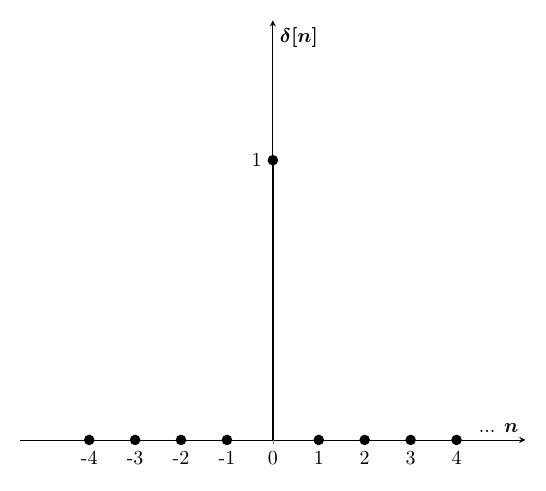

Processamento
Digital de Sinais
Fabrício Gomes
fgs.fabricio@gmail.com
Aula 2
Apresentação disponível no GitHub: https://github.com/fgsfabricio/PDS_Unisul
2018.1
Classificação dos Sistemas em Tempo Discreto
Sistemas Lineares
- Um sistema diz-se linear se a saída correspondente a uma qualquer combinação linear de entradas é a mesma combinação linear correspondente a cada uma das entradas. Esta condição é equivalente às propriedades:
- Aditividade: $x_1[n] \rightarrow y_1[n] $ e $ x_2[n] \rightarrow y_2[n] \Rightarrow x_1[n]+x_2[n] \rightarrow y_1[n]+y_2[n]$
- Homogeneidade: $x_1[n] \rightarrow y_1[n] \Rightarrow ax_1[n] \rightarrow ay_1[n]$
Classificação dos Sistemas em Tempo Discreto
Sistemas Lineares
Exemplo a): Verificar se o sistema abaixo é linear.
$$y[n] = nx[n]$$Classificação dos Sistemas em Tempo Discreto
Sistemas Lineares
Exemplo b): Verificar se o sistema abaixo é linear.
$$y[n] = x^2[n]$$Classificação dos Sistemas em Tempo Discreto
Sistemas Invariantes no Tempo
- Sistema para o qual ou atraso no tempo da sequência de entrada causa um deslocamento correspondente na sequência de saída, ou seja, o sistema não deve interferir temporalmente na saída em relação ao sinal de entrada.
- Se $x_2[n] = x_1[n - n_0]$, a saída produzirá uma sequência com valores $y_2[n] = y_1[n- n_0]$
Classificação dos Sistemas em Tempo Discreto
Sistemas Invariantes no Tempo
Exemplo a): Verificar se o sistema abaixo é invariante no tempo.
$$y[n] = 5x[n-10]$$Classificação dos Sistemas em Tempo Discreto
Sistemas Invariantes no Tempo
Exemplo b): Verificar se o sistema abaixo é invariante no tempo.
$$y[n] = \frac{x[n]}{n}$$Classificação dos Sistemas em Tempo Discreto
Sistemas Invariantes no Tempo
Exemplo 2.7 O Acumulador (Oppenheim). Verificar se o sistema abaixo é invariante no tempo.
$$y[n] = \sum\limits_{k=-\infty}^{n} x[k]$$Classificação dos Sistemas em Tempo Discreto
Sistemas Causais
- Sistema para o qual a saída não depende de sequências de entradas futuras, ou seja, depende de valores da sequência para $n \leq n_0$.
- Isso implica que, se $x_1[n] = x_2[n]$ para $n \leq n_0 $, então $y_1[n] = y_2[n]$ para $n \leq n_0$.
Classificação dos Sistemas em Tempo Discreto
Sistemas Causais
Exemplo a): Verificar se o sistema abaixo é causal.
$$y[n] = 5x[n-10]$$Classificação dos Sistemas em Tempo Discreto
Sistemas Causais
Exemplo b): Verificar se o sistema abaixo é causal.
$$y[n] = x[-n]$$Classificação dos Sistemas em Tempo Discreto
Sistemas Estáveis
- Um sistema é estável no sentido entrada limitada saída limitada (BIBO, do inglês bounded-input, bounded-output) se, e somente se, toda sequência limitada de entrada produzir uma sequência limitada de saída.
- Implica que $max(|x[n]|) < \infty$ e $max(|y[n]|) < \infty$
- E implica que $max(|y[n]|) < \infty$
Classificação dos Sistemas em Tempo Discreto
Sistemas Estáveis
Exemplo a): Verificar se o sistema abaixo é estável.
$$y[n] = 5x[n-10]$$Classificação dos Sistemas em Tempo Discreto
Sistemas Estáveis
Exemplo b): Verificar se o sistema abaixo é estável.
$$y[n] = \frac{x[n]}{n}$$Sinais Discretos Importantes
Amostra Unitária
$$\delta[n] = \begin{cases} 0, n \neq 0\\ 1, n = 0 \end{cases}$$ Sinais Discretos Importantes
Degrau Unitário
$$u[n] = \begin{cases} 0, n < 0\\ 1, n \geq 0 \end{cases}$$